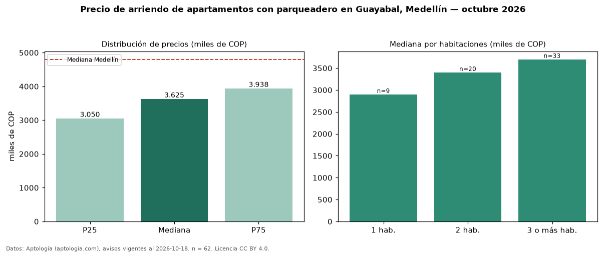

Precio de arriendo de apartamentos con parqueadero en Guayabal, Medellín — octubre 2026
Con 62 avisos vigentes, el canon mediano de apartamentos con parqueadero en arriendo en Guayabal, Medellín es COP 3,62 millones al mes. Eso es 4 % más que la mediana de todos los apartamentos en arriendo de Guayabal (COP 3,50 millones, n = 94); este segmento reúne el 66 % de esos avisos. Por metro cuadrado, la mediana es COP 52.470/m² al mes (n = 62), 7 % por encima del conjunto de referencia (COP 49.254/m²). El área mediana anunciada es 68 m². El segmento con más oferta es el de 3 o más habitaciones (33 avisos, mediana COP 3,70 millones); pasar de 1 habitación a 3 o más habitaciones cambia la mediana +28 %. El estrato más frecuente es 3 (45 % de los avisos con estrato). La mediana de todos los apartamentos en arriendo de Medellín es COP 4,80 millones (−24 % de diferencia). La mitad central de los avisos va de COP 3,05 millones a COP 3,94 millones (razón 1,3), una dispersión baja. Datos: Aptología (aptologia.com), CC BY 4.0 — https://www.aptologia.com/arriendo/medellin/guayabal. Archivos: PDF, CSV con las cifras y gráfica PNG.

| Avisos únicos | 62 |
|---|---|
| Percentil 25 | COP 3.050.000 |
| Mediana | COP 3.625.000 |
| Percentil 75 | COP 3.937.500 |
| Mediana por m² | COP 52.470 |
Fuente: avisos vigentes de portales inmobiliarios recopilados por Aptología, deduplicados (mínimo 30 avisos únicos por celda). Precios pedidos, no cerrados. Fecha: 2026-10-18.